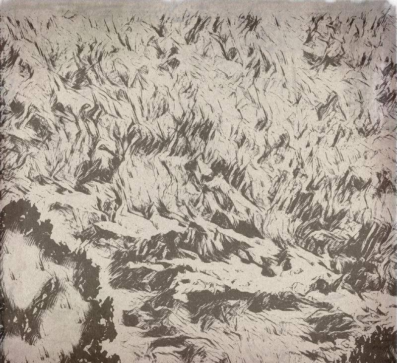
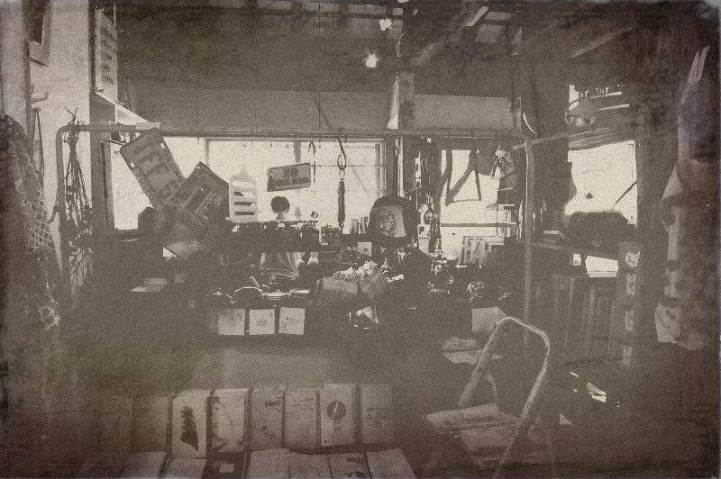

搶語者老闆娘
2017-09-05

「再吃一顆蘋果。」
「好煩，上班到底為了甚麼！」
著白色襯衫的男子放攤在椅上，厭倦每一日的重複。盯著螢幕規律閃爍的白點，假似很認真的樣子。
一不留神，白點忽然開始移動起來，他皺了皺眉，揉揉眼睛，再仔細一看，居然是棟建築，哇靠，這是什麼巫術！
「找我嗎？」前方傳來女子軟細的聲音，像是在召喚他。
「進來阿，看看不犯法。」
男子向前一探，屋簷下居然飄著幾個字跡「故事柑仔店」，「啥，我是不是在作夢？！」
「不是夢。」窗簾唰的一聲拉開，長相清秀的女子揮手叫他進去。
甫進門，眼前左右放著兩排貨架，除了大小顏色不同的空瓶外，架上什麼也沒有。
「你們店...賣什麼的？」
「故事啊！」女子倚在櫃旁，從黑洋裝的外側袖袋拿出蘋果，一口咬下。
「要來顆蘋果嗎？」她眉眼甜笑，掌心上放著一顆微斑的蘋果。
遲疑一會兒，他心想自己又不是白雪公主，怕什麼，索性開始啃咬起來。
叩叩，對桌的同事敲敲他的螢幕：「又再放空啦。」
「我剛好像去了....故事柑仔店？」男子有些呆滯。
「神經。」同事白了他一眼。
男子疑惑地低下頭，手上多了個蘋果圖案的胸章，刻著幾個字：「謝謝光臨」，再眨眨眼，手上便什麼也沒有了。
歡迎來到語巫們的柑仔店 ，
每天日落的魔幻時刻，為你說一個故事。
老闆娘說話要聽
今天中元節，稍晚開始放送七月半系列，
請準備好你的膽
